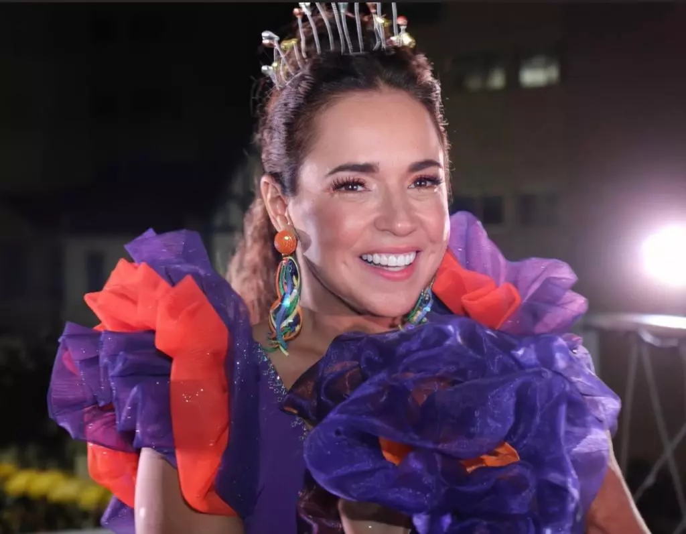

Reunindo sempre multidões, o Crocodilo mantém a tradição de sair às ruas no domingo e na segunda-feira de carnaval. Comandado, pela Rainha Má, Daniela Mercury, tornou-se um dos blocos mais tradicionais e famosos do carnaval de Salvador. Daniela comanda os folioes saudando o axé da Bahia, suas raízes negras e históricas. Com as bênçãos de Iemanja, o bloco é dos mais queridos do Carnaval baiano. 
História do Bloco
O Crocodilo está entre os maiores e mais antigos blocos de Salvador. Se você está indo passar o carnaval pela primeira vez em terras baianas, não pode deixar de curtir a folia com a cantora Daniela Mercury, que sempre agita os foliões com sua irreverência e originalidade, em uma mistura do axé com outros ritmos musicais! O bloco nasceu em 1985, criado por um grupo de ex-alunos do Colégio Marista de Salvador. A primeira grande atração do bloco foi o cantor uruguaio Jorge Zárath, em 1987. Depois, já passaram por ele artistas como Asa de Águia, Ricardo Chaves, Araketu, e Eliana. Daniela Mercury está no comando desde 1996.